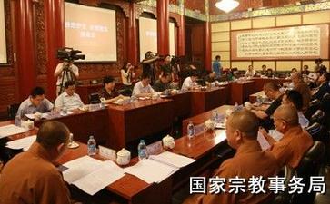

7月30日,国家宗教事务局邀请中国佛教协会、中国道教协会、环境保护部、农业部、国家林业局、清华大学、中国农业大学、中国野生动物保护协会等方面代表,召开以“慈悲护生、合理放生”为主题的座谈会,总结佛教道教关于慈悲护生、合理放生的理念与实践,听取政府部门对相关法律法规的阐释解读,征询专家学者意见建议,呼吁佛教界和道教界引导广大信教群众随缘放生、合理放生,让善行真正结出善果。国家宗教局副局长蒋坚永主持会议。
国家宗教局局长王作安在书面致辞中从加强生态文明建设、共建“美丽中国”的高度,希望佛教、道教界从自身做起,从点滴做起,以建设“生态寺院”和“生态宫观”为契机,针对当前放生领域出现的突出问题,弘扬慈悲护生理念,倡导合理放生活动,共同推动形成慈悲护生、合理放生的新风尚。他指出,规范合理的放生活动必须满足三个标准,首先是遵守国法,依法放生,守法护生,不能违反国家法律和有关国际公约;其次是符合教法,遵循佛教、道教的教义仪轨,随缘放生;再次要讲究方法,尊重科学,谨慎放生,把好事做好。对于佛教界、道教界如何引导信众合理放生,王作安局长提出了三点建议:一是要倡导合理放生,加强宣传,引导信众学习相关法律法规和科学知识,正信正行,涵养仁恕精神,践行慈悲之道;二是建立放生协作机制,自觉接受政府部门的指导和监督,多听取专家学者的意见和建议,与合法的民间环境保护、动物保护组织携手,争取发挥更大作用;三是将合理放生纳入和谐寺观教堂创建活动中,佛教、道教团体,寺庙宫观和宗教教职人员各司其职,促进合理放生活动健康开展。
中国佛协和中国道协的负责人阐释了放生活动在践行教理教义方面的积极作用,介绍了佛教、道教慈悲护生、珍爱生命的本怀,呼吁信众在放生活动中真正体现尊重生命的理念,引导人心向善,为促进生态文明、建设美丽中国做出贡献;环保部、农业部和林业局的有关负责同志通过对相关法律法规的解读,为放生活动厘清了法律规范;动物保护协会和农业大学的专家分析了目前放生活动中存在的误区和危害,并从科学背景、具体操作方面提出了意见建议。
清华大学蒋劲松教授认为,关于佛教、道教放生实践中存在的问题,现在社会各界已有相当的共识,大家尤其是佛教界本身在原则上也提出了一些建议,但是,目前为止这些建议可操作性不强,对佛教、道教人士的放生实践影响并不大。还需要更加深入地研究不当放生产生弊端背后深刻的原因。我认为就放生谈放生,是头痛医头脚痛医脚,不能解决问题,而且容易挫伤佛教、道教人士护生的积极性。更好的问题应该还是在我们的社会中,一个普通的善心人士如何去更好地帮助动物,如何去尽可能地减少随处可见的杀戮现象,如何培育大家的慈悲心,这才是问题的关键。如果大家真把思考的重点放在这里,就会是一种积极的建设性的讨论。否则,老是把目光聚焦在批评这些有善良发心但缺乏足够知识的普通信众身上,是转移了视线,也很不利于动保界与佛教道教界的合作交流。
会上,中国佛教协会和中国道教协会宣读了《慈悲护生合理放生倡议书》(本文后附),呼吁广大信众践行佛教、道教慈悲护生的理念,遵守法律法规,以科学知识为指导,正信正行,合理放生,慈悲护生,为建设生态文明、美丽中国贡献力量。
出席座谈会的有:中国佛教协会副会长学诚,中国道教协会副会长张继禹、黄信阳、秘书长王哲一,环保部自然生态保护司副司长侯代军,农业部渔业渔政管理局副局长李彦亮,国家林业局野生动植物保护与自然保护区管理司野生动物保护与繁育利用监管处处长王维胜;清华大学科学技术与社会研究所副教授蒋劲松,中国野生动物保护协会资深会员于凤琴,国家林业局调查规划设计院高级工程师阮向东,中国农业大学教授李建军等,以及国家宗教事务局相关部门负责同志参加会议。
中国佛教协会关于“慈悲护生、合理放生”的倡议书
放生,顾名思义,就是把可能被宰杀、面临生死痛苦的动物解救出来,放归到适合它们的自然环境中。据记载,早在春秋战国时代,中国汉地就有在特殊日子放生的说法。佛教传入中国之后,特别是在隋代天台宗智者大师的倡导下,放生活动蔚然成风。佛教徒在放生之时,要按照佛教仪轨祈求三宝加持,帮助被放生的动物早日解脱轮回之苦。
放生蕴含着佛教众生平等、尊重生命的慈悲情怀,自他相关、因果回馈的辩证智慧,善待生命、普度众生的宗旨追求。佛教认为,一切众生皆有佛性,动物与人类的生命同样宝贵。恶意杀生,必遭恶报。大乘佛教主张,“六道众生皆是我父母”,要求佛弟子本着报恩心、慈悲心,爱护一切生命,“若见世人杀畜生时,应方便救护,解其苦难”。因此,佛教以杀生为最大的恶业,以不杀生为首要的戒律,以慈悲护生为极大的功德,倡导佛弟子慈心戒杀,不恼害一切众生,并积极地护生放生。
根据佛教经典的记载,放生是自利利他的行动,是佛教徒践行慈悲精神,积累福德资粮的方式,得到历代高僧大德的推崇和倡导,也得到广大佛教信众的积极实行。当今社会,放生的意义在于涵养仁恕精神、践行慈悲之道。如果人人都能够爱护生命、保护生命,就能从根本上消减滥捕滥杀,对于促进生态文明、构建和谐社会具有积极意义。
然而,现今的社会环境、生态环境与古代有很大不同。如果放生方法不当,有可能背离佛教慈悲初衷,甚至造成更多的动物伤害和生态环境的破坏。主要体现在以下几个方面:一是在生活居住区周边放生危害人类生命安全、影响人们正常生活的动物,如蛇、蟒等。二是将动物放生到不适宜的生长环境中,致使其难以存活。三是放生外来物种或携带疫病病原体的动物,造成放生地原有食物链结构破坏,原有的物种种群急速减少甚至灭绝,动物疫病蔓延,造成生态灾难。四是在当今商业化的时代,经常性、定期性、大规模的放生活动,催生出抓捕、贩卖放生动物的市场和行业,很多野生动物反而因此被抓捕乃至丧生。这些问题如不给予足够重视和解决,放生就难以达到救护生命的目的,反而难免伤害生命,引起社会公众的非议和反感,有损佛教的形象。
针对现代社会放生遇到的新情况、新问题,佛教界倡导“智慧放生”、“理性放生”、“科学放生”、“随缘放生”等理念,并付诸实践,取得了良好效果。根据各地佛教界在放生活动中提出的新理念、获得的新经验
中国佛教协会向全国佛教四众弟子发出以下倡议:
一、慈悲为怀,随缘放生。我们倡导全国佛教四众弟子在日常生活中,慈悲为怀,戒杀护生。遵守野生动物保护法律法规,不参与野生动物的捕杀和交易活动,拒绝购买和使用象牙、犀角等野生动物制品,并主动向公安部门或动物保护组织报告滥捕滥杀和贩卖野生动物的活动,帮助解救被非法捕捉的野生动物。鼓励信众有条件者参与动物保护组织的活动或资助动物保护项目。提倡多种形式宣传戒杀护生、健康素食的理念,劝化世人慈悲护生。组织放生活动的寺院或团体,应认真讲解放生的目的、意义及相关知识、注意事项,培养信众的慈悲护生意识,提倡随缘尽力、慈悲合理地放生,不刻意追求数量和形式。
二、讲究科学,合理规划。放生之前,应对被放生动物的习性、检疫情况,放生地的生态环境、食物链结构等进行必要的了解,必要时可向有关专家或机构寻求咨询和帮助,确保被放生动物的习性、数量、健康状况与放生环境相协调。合理规划放生的规模、次数和物种,努力避免放生动物对人类生命、生活或放生地生态安全造成威胁。
三、精心组织,如法进行。放生事关动物生命安全,参与放生者应以高度的责任感进行。对放生动物的运输、看护、释放及有关佛事活动,精心组织,周密安排,尽量减少放生动物在放生过程中的意外死亡。运送放生动物过程中,要为其提供生存必需的基本条件。释放动物,应避免采用简单粗暴的方式。放生法会,应按照佛教仪轨如法进行,体现拔苦与乐、普度众生的佛教宗旨。
佛教度化世间、利益众生,主张悲智双运。护生放生,既要本慈悲心怀,也要以智慧引导。我们提倡佛教四众弟子在日常生活中慈悲为怀,戒杀护生,支持参与动物保护活动。我们号召各地寺院引导信众慈悲护生、合理放生。我们呼吁全国佛教界开展放生活动时,本着佛教慈悲精神,遵守有关法律法规,采取科学合理方式,使放生活动善愿结善果、好心成好事,更好发挥慈悲救护生命、促进生态文明、净化社会人心的积极作用。